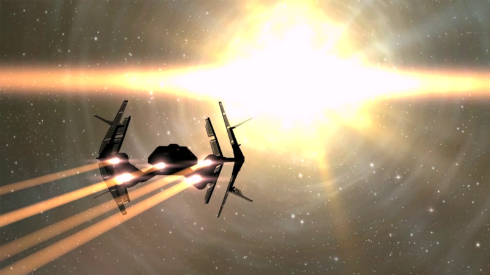

Continuing our New Eden Explorers series this week, next up we have DrJonF Rockit.
I must confess that I’m not one for sources of News in RL (Real Life). So, it should come as no surprise that I don’t follow gaming news sites either. Nothing personal, per say, I simply think they all leave a lot to be desired when it comes to unbiased reporting. Oh well, such is life. When my good friend and longtime supporter, Rhavas, pointed me at TheMittani.com, I have to say I was a little reluctant, but I’m glad I did.
There you will find a new series of Exploration Videos done by DrJonF Rockit. He’s traveling the cluster, presenting lore, and video footage along the way. The series just started a couple of months ago, and you can find them linked below. I’ve already learned of a couple of sites I wasn’t aware of, or forgot, or simply missed, during my own personal journey. For example, for a cheap ship wash and latte, be sure to visit Choonka’s. You’ll have to watch the videos to find out where. 😉 (Sadly, the website and video's are no longer available.)
Landmarks Unknown: EVE Gate
Landmarks Unknown: Amarr Empire
Landmarks Unknown: The Gallente Federation
What attracted you to EVE Online and how long have you played?
When I became a capsuleer it was in 2008 and I had exhausted my interest in orcs and mages and anything else that wielded magic. My interests in FPS outer-space oriented games like Descent III and FreeSpace led me to a game called Freedom Fighter. But the interest in PVP was not quite there with that game. I branched out to find any other game that met my interests, that’s when I found Eve.
The whole era of PVP in top down games like WoW (aka: MMORPG) interested me the most, it was the time when the story about the friends of an IRL player who died held a vigil in silence when a horde came through and slaughtered them all as they sat mourning. Since that point, the IRL / PVP / MMORPG game genre had my attention.
Not knowing anything about Eve I brought Dr Jon into the world of Eve Online and proceeded to be a terrible pilot, afraid of PVP. After all, once you realize that all the long mining efforts and arduous mission running can be thwarted in 3 seconds when you make the wrong turn, I became the typical “carebear” in New Eden.
How would you describe your characters career path?
I believe I started my first Eve character as an industry character. It was my sole ambition to make money running goods to Nullsec and selling them at high prices. I was grotesquely unaware of the logistics behind such a bold mission statement. Since then I have mined and bought low, sold high, one isk’d, and adjusted market values on items in systems where I saw needs arise. In the end I gave all that up for the rush of PVP in a Nullsec corp. The path I took with Jon was very scattered and not well thought out or planned.
Today I can honestly say that my other Eve characters have wasted very few moments with the wrong training. I was lucky in some respects when I realized how some skills that I trained haphazardly ended up working out in my favor out here in Nullsec.
I did not seriously consider exploration in eve (outside of my fascination with wormholes) until I landed the job exploring for posterity and making videos.
What attracted you to explore New Eden? What is your goal and have you achieved it? If not, are you still working towards your goal, do plan to continue, or what are you currently doing?
I was interested in a new perspective for my vision of New Eden. I had been making some fun videos for corp recruitments and propaganda videos with Eve graphics using FRAPS.
My goal is to finish my set number of episodes for MDC, I won’t disclose the amount of episodes or their content but my goal is to present the lore of Eve to players with integrity. As far as my achievements, so far so good.
What is the name of your favorite ship that you enjoy flying the most while exploring? Why is it your favorite? Would you mind sharing your fit?
My favorite ship to explore in Eve is my Leopard, simply because it is unarmed and very expensive. But moreover it is probably one of the coolest looking ships in the game. Slap some mods on it? It would be by far my favorite PVP ship (if they ever did that).
Other than that, the important thing is to use a cloaking ship, or a rookie ship. Simply because you may need to visit a site that has rats where you can’t kill them. Rats don’t pod you so it makes the most sense to go in a rookie ship in some cases. With a rookie ship you get one pass through a gate camp. If you can’t make it, at least you didn’t lose an expensive ship. I will share this fit with you as it is my regular cloaky explorer. If I need to get somewhere risky in NULL I will take this.
[PVP HAM Dark Knife XVII]
Damage Control II
Ballistic Control System II
Ballistic Control System II
Large Shield Extender II
1MN Microwarpdrive II
Shadow Serpentis Warp Scrambler
Stasis Webifier II
Adaptive Invulnerability Field II
EM Ward Field II
Covert Ops Cloaking Device II
Heavy Assault Missile Launcher II, Scourge Rage Heavy Assault Missile
Heavy Assault Missile Launcher II, Scourge Rage Heavy Assault Missile
Heavy Assault Missile Launcher II, Scourge Rage Heavy Assault Missile
Heavy Assault Missile Launcher II, Scourge Rage Heavy Assault Missile
Heavy Assault Missile Launcher II, Scourge Rage Heavy Assault Missile
Medium Core Defense Field Extender I
Medium Core Defense Field Extender I
Medium Core Defense Field Extender I
Tengu Defensive – Supplemental Screening
Tengu Electronics – Dissolution Sequencer
Tengu Offensive – Covert Reconfiguration
Tengu Propulsion – Interdiction Nullifier
Tengu Engineering – Augmented Capacitor Reservoir
During your research and travels, what has been the most interesting fact, amazing sight, or other aspect of New Eden that surprised you?
So far, the most amazing fact is that the Minmatar are part of the Gallente bloodline. I had no idea.
The coolest site so far has been Blood Reach which has some very cool visuals. You can see this location in my latest video featuring the Amarr, LandMarks Unknown: Amarr Empire.
The biggest surprise was the barren trip devoid of hostiles at the Eve Gate.
What have you learned or what advice would you give to someone interested in exploring New Eden?
I have learned that there is very little wiggle room for factual Eve lore. The more interesting thing is that there are SO MANY different significant locations in space that tie directly with the lore.
Do you have a favorite image that you wouldn’t mind me posting and sharing from your explorations?
Favorite image from my video series: LandMarks Unknown with Dr. Jon F. Rockit

New Eden Gate

{kind=link}
{kind=link}
{kind=link}